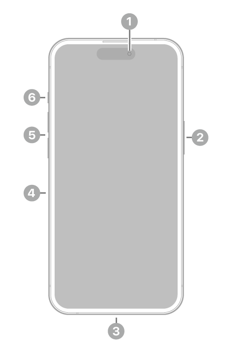

iPhone Buttons#
The front of the iPhone has three external buttons, one switch, and a camera. The charging port is on the botton edge. A diagram is shown below.
Front camera
Power button
Charging port
SIM tray (models outside the US only)
Volume up/down
Silent/Ring switch
Let’s go over some simple ways we use these buttons.
Put your phone on silent#
There is a red bar which will indicate whether or not your phone is on silent (meaning, it will not ring, only vibrate). If the red bar is visible on the switch, then it is on silent. Otherwise, it is not.
Siri#
Hold down the power button to access Siri. A short tutorial on how to use Siri can be found here.
Shutting down#
Hold down the power button and either volume button until the shutdown screen appears. Swipe the slider which says “slide to power off” to shut down your phone.
Taking screenshots#
Press the power button and the volume up button simultaneously to take a screenshot. The screenshot will go to the botton left corner of your screen. If you click on it, it brings you directly to photo editing. After editing, once you hit “done” in the top right corner, you will be given a couple options. If you swipe it off the screen, it will be saved to your photos. A more detailed guide on photos and camera is here.